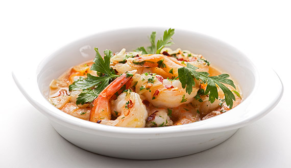
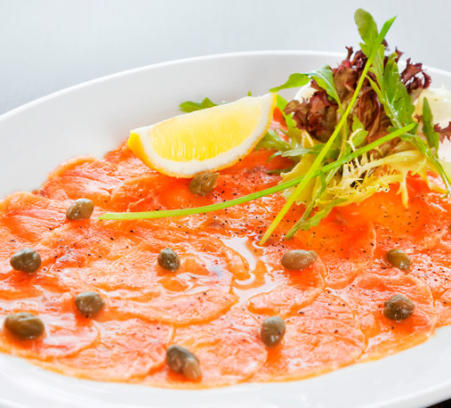
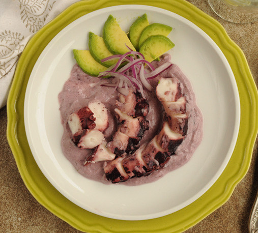
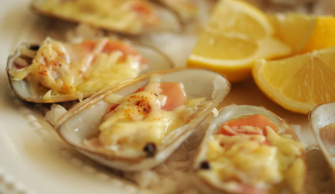
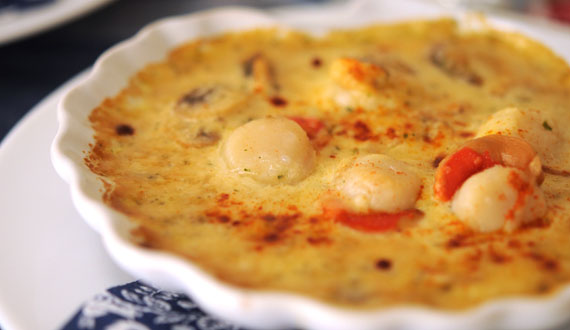
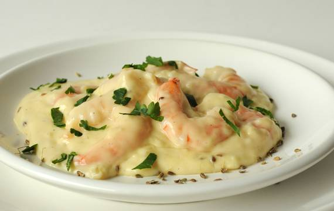
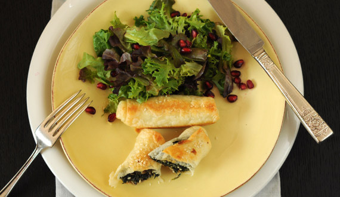
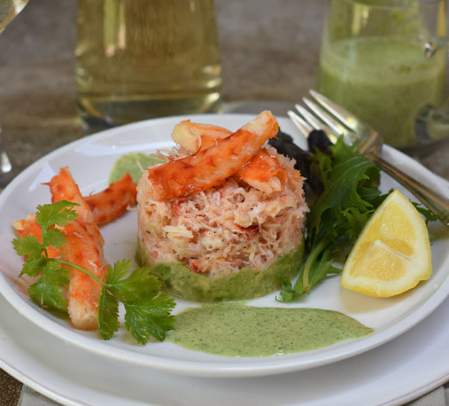

| ENTRADAS | ||
|---|---|---|
|  | Camarones al pil pil $185 | Los camarones al pil pil son una receta tradicional de la cocina vasca muy difundida en Latinoamérica gracias a la disponibilidad de sus ingredientes. |
|  | Carpaccio de Salmón $210 | El carpaccio de salmón es una receta delicada y aromática creada en Italia por Giuseppe Cipriani. |
|  | Pulpo al olivo $200 | El pulpo al olivo es un plato de la gastronomía peruana, y representativo de la cocina nikkei, elaborado a base de finas lonchas de pulpo cocido con una crema de aceituna negra. |
|  | Machas a la parmesana $190 | Las machas son moluscos de concha alargada que se obtienen en la costa chilena, en cuyo interior se encuentra un carnijon gris, que al cocinarla se vuelve rosada, tiene un sabor exquisito y es un acompañante de lujo para una entrada espectacular. |
|  | Ostiones a la parmesana $150 | Los ostiones a la parmesana son los “hermanos menores” de las machas a la parmesana, una deliciosa preparación que se cree que fue creada en el restaurante San Marco en la ciudad de Viña del Mar, y se preparan exactamente igual, y son igual de sabrosas. |
|  | Camarones en salsa de Anís $190 | La receta de Camarones en Salsa de Anís es definitivamente un increíble pescatarian opción para los amantes de la comida mexicana. |
|  | Mini strudels de champiñón y espinaca $120 | El strudel es un tipo de pastel originario de Imperio Austrohúngaro y que se asocia frecuentemente con las cocinas alemana, austriaca, checa, húngara, rumana e italiana. |
|  | Entrada de centolla $250 | Bocado gourmet de mesas de lujo en todo el mundo, la centolla es apreciada por la carne de sus patas y el caparazón. |